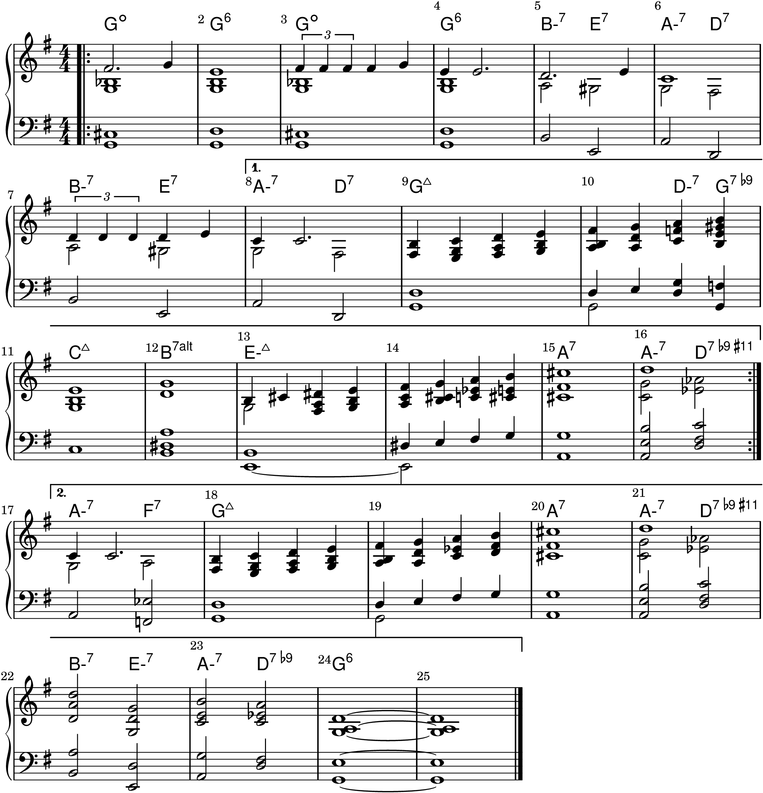
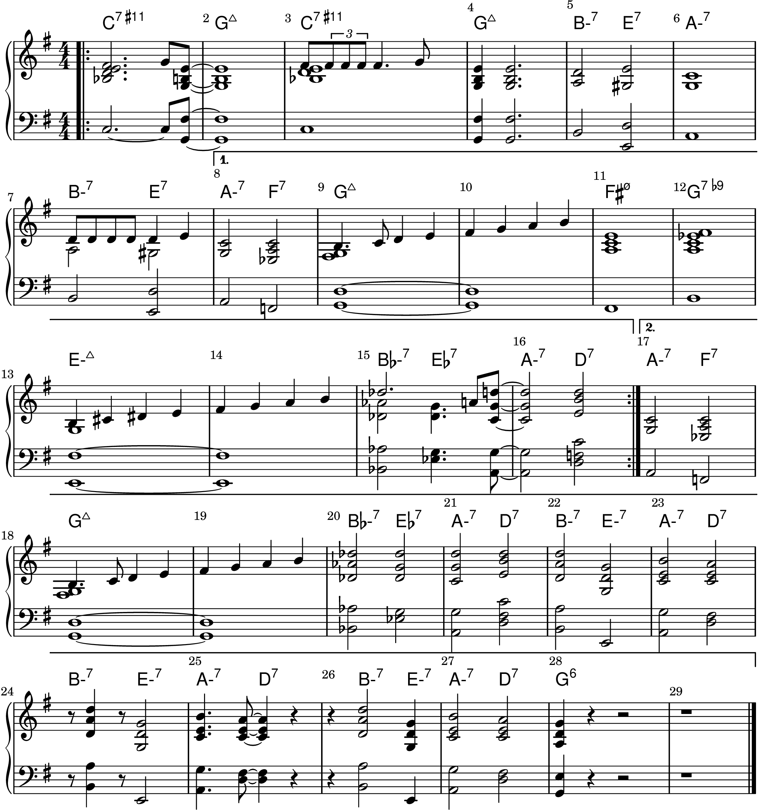
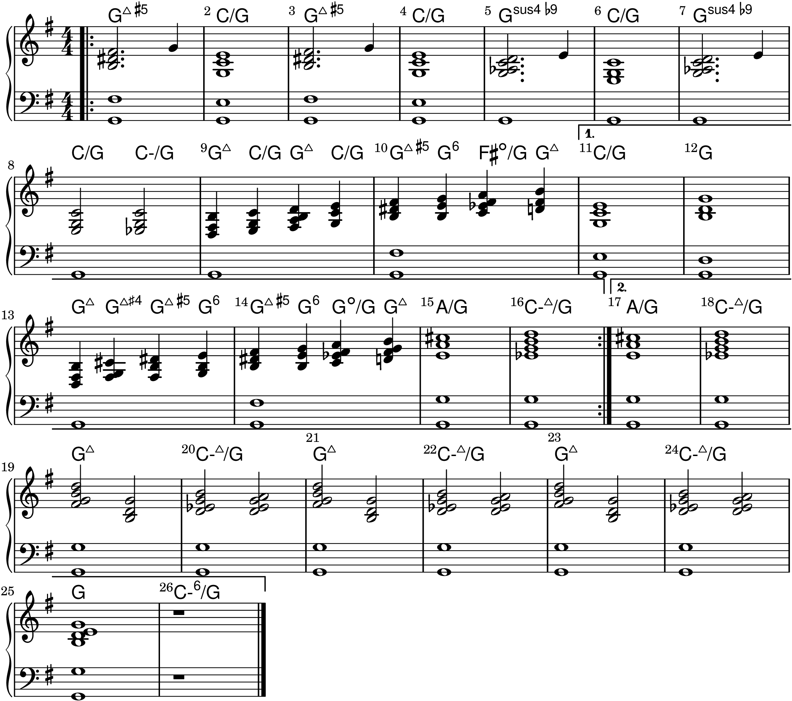
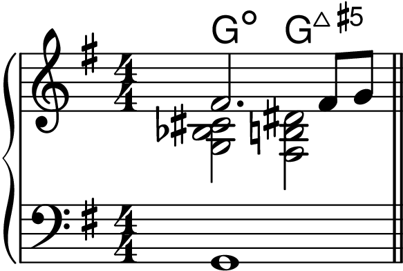
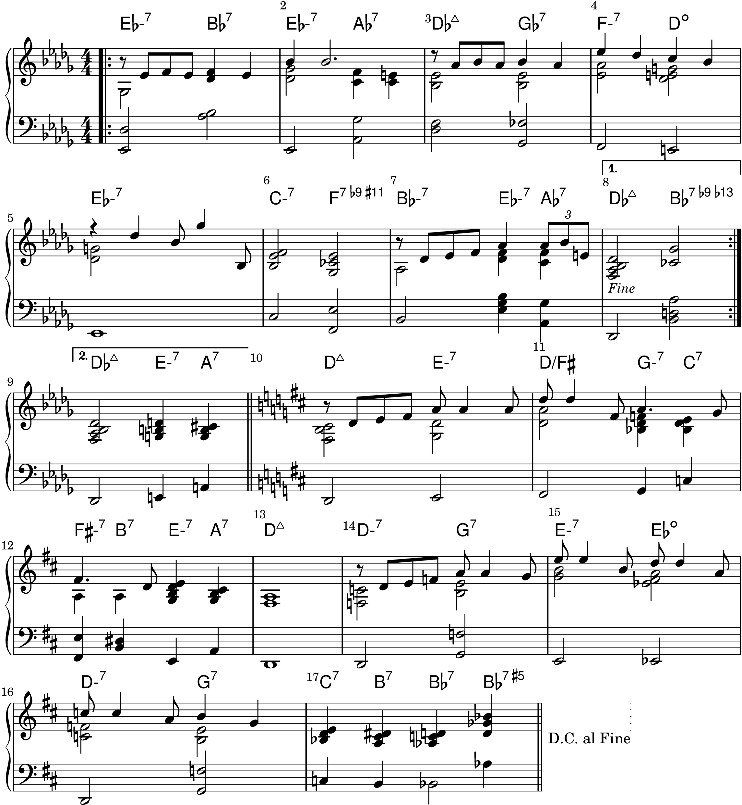
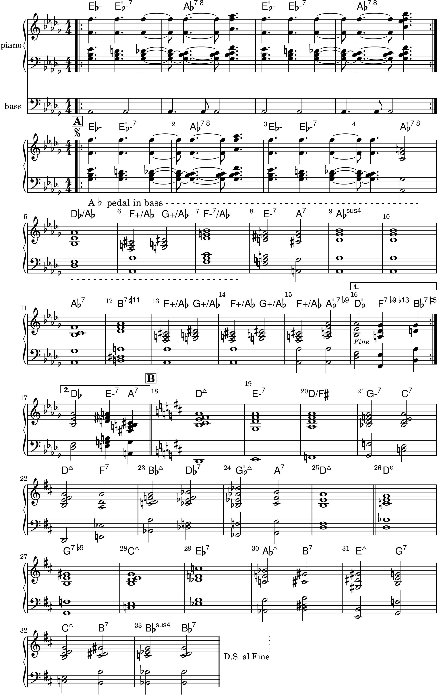

Chapter 16: Three Reharmonizations
Back to Top
John Coltrane's Reharmonization of "Spring Is Here"
Figure 16-1

Figure 16-2

Kenny Barron's Reharmonization of "Spring Is Here"
Figure 16-3

Figure 16-4

John Coltrane's Reharmonization of "BodyAnd Soul"
Figure 16-5

Figure 16-6
